Dina betalningar i takt med din kalender.
Planera räkningar och prenumerationer, ställ in påminnelser och behåll en tydlig månadsöversikt. Din data stannar på enheten.
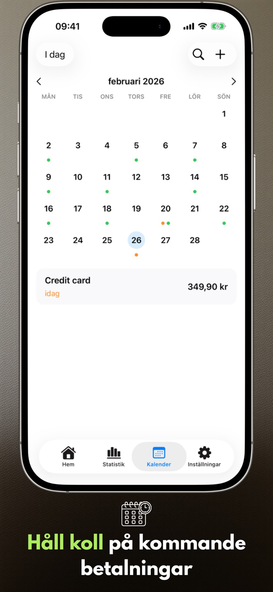
Nyheter i version 2.3.1
- Widgetar fungerar mer tillförlitligt.
- Betalningslistan visas korrekt på Mac.
Appens skärmar
Sex nyckelskärmar på iPhone och iPad som visar planeringstempot med Payment Calendar.
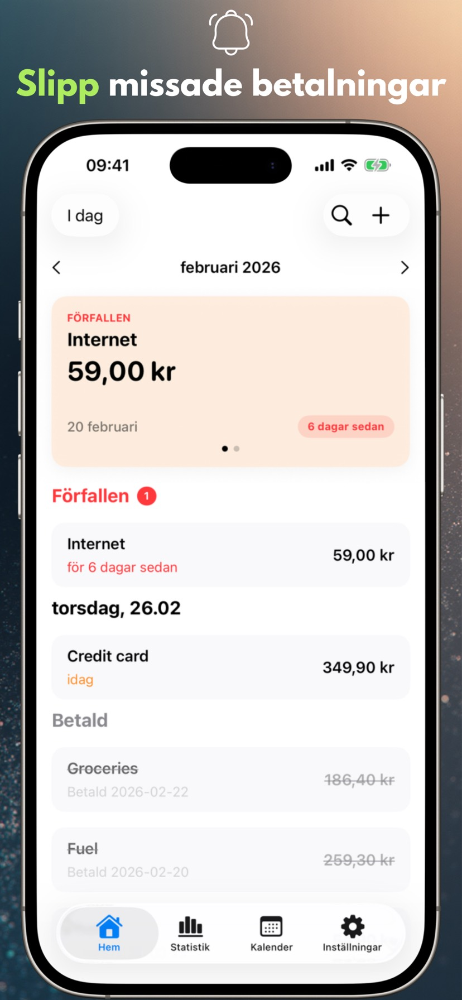
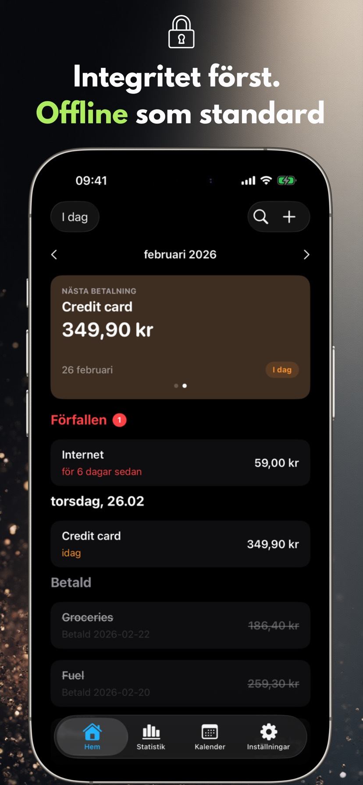
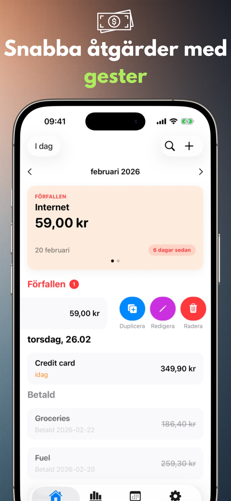
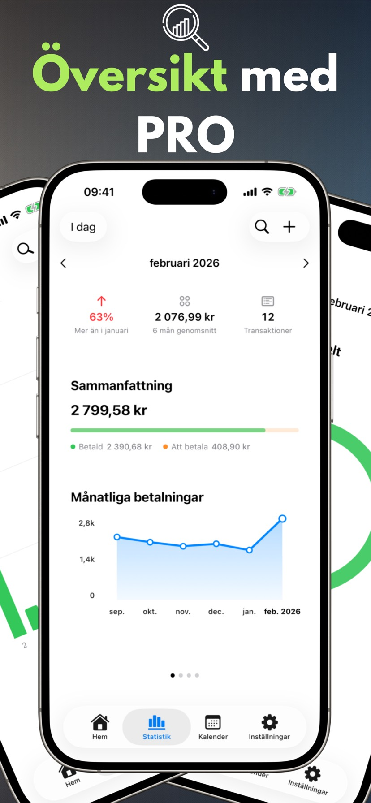
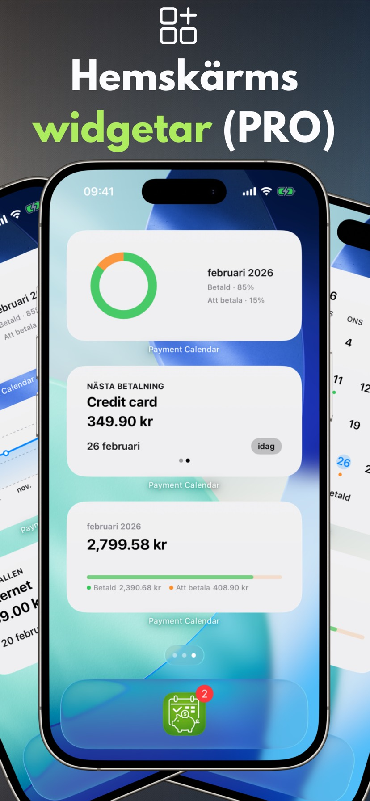
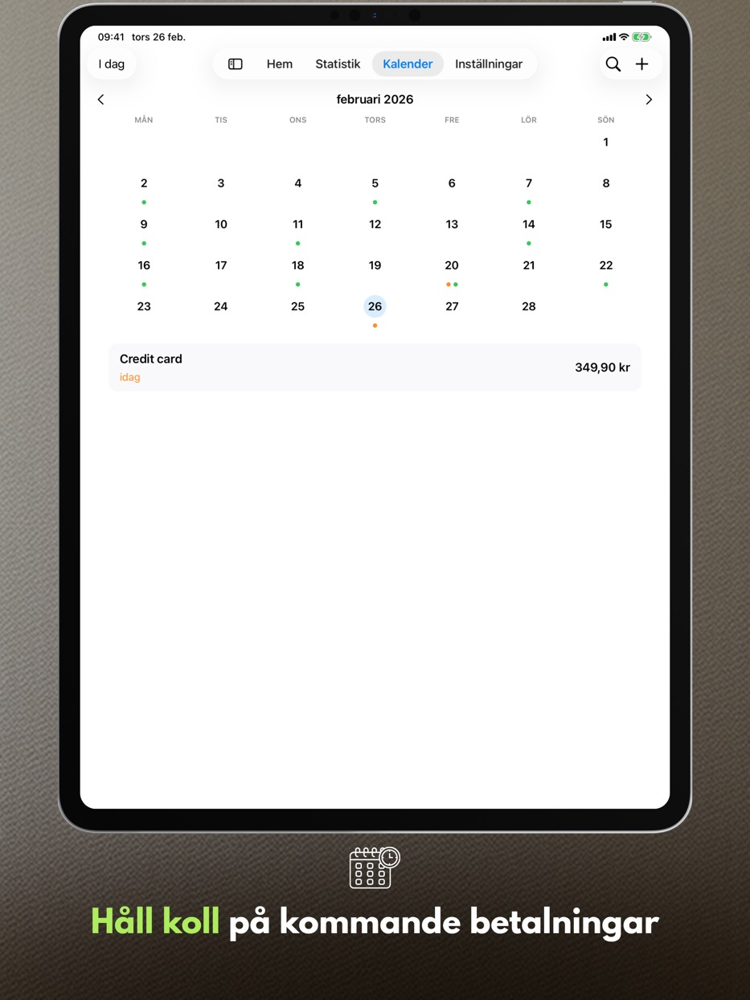
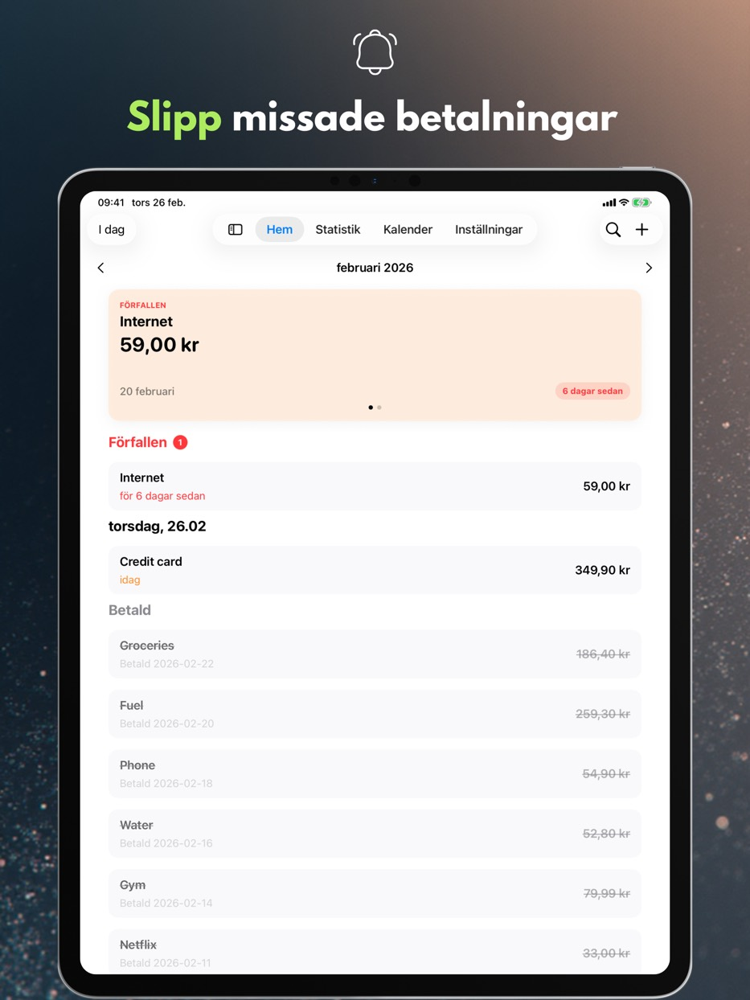
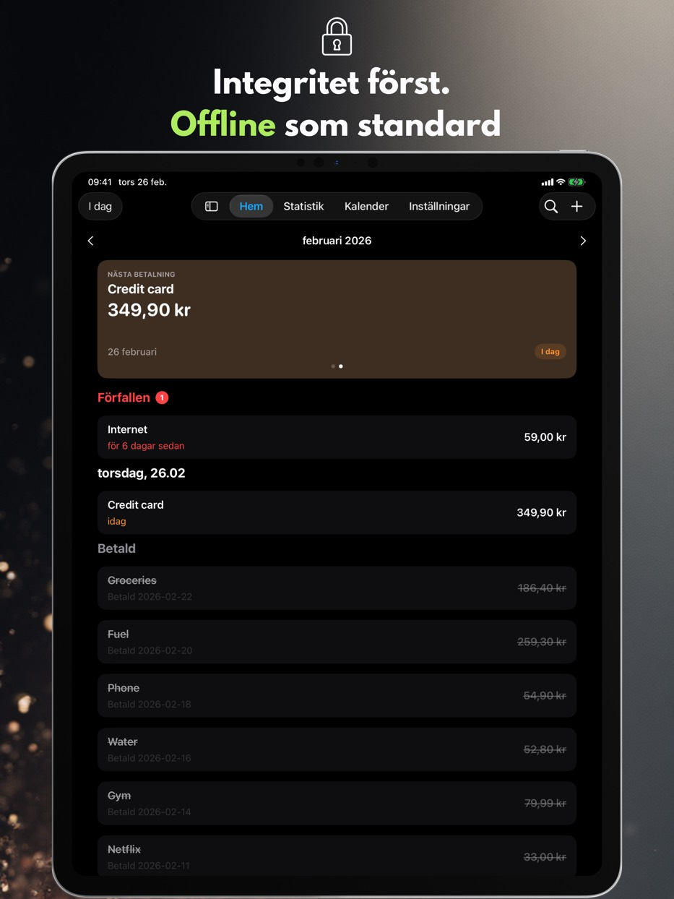
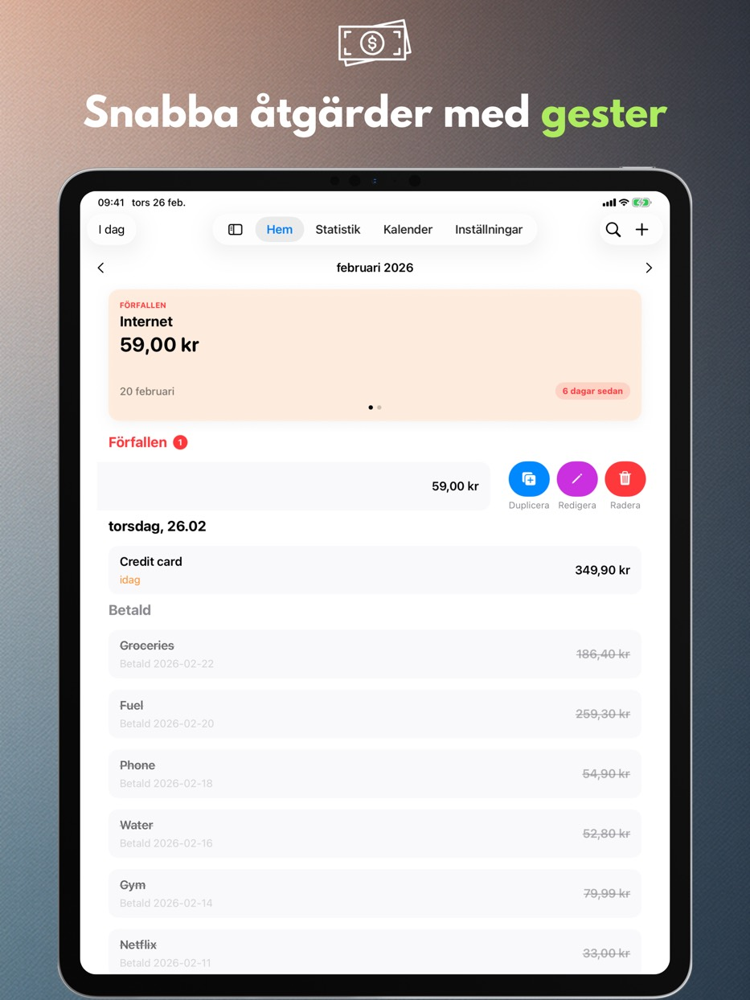
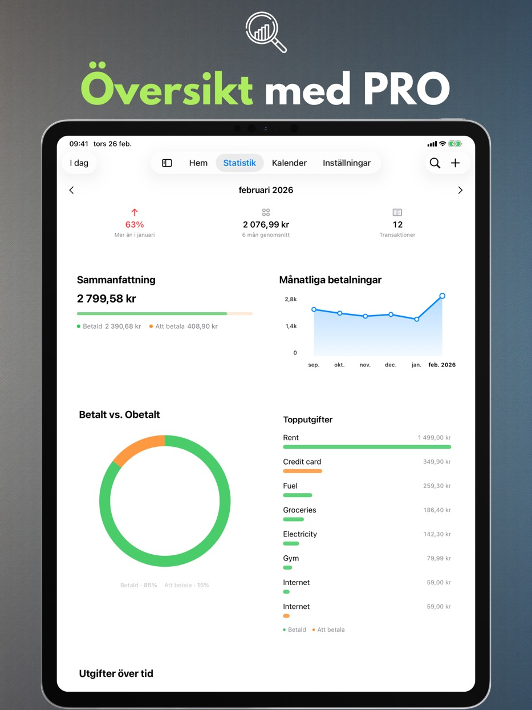
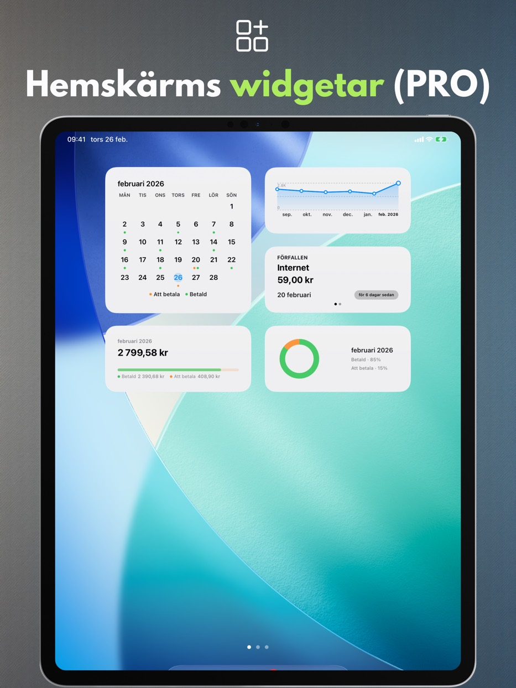
Appens funktioner
Allt nedan fungerar utan kostnad och utan konto: en tydlig månadsvy, snabb registrering av betalningar och påminnelser som låter dig planera utgifterna i lugn och ro.
Betalningskalender
Se kommande förfallodatum och din betalningslista på ett ställe.
Påminnelser
Få notiser på förfallodagen eller några dagar tidigare.
Gester och snabbåtgärder
Markera som betald, redigera eller duplicera med en svepning.
Sök
Hitta betalningar efter namn, belopp eller anteckningar.
Personliga inställningar
Valuta, veckostart, design och en layout som passar dig.
iPad-stöd
Fönsterläge och Split View, samt tangentbord och kortkommandon.
Papperskorg
Raderade betalningar ligger kvar i Papperskorgen i 30 dagar — du kan återställa dem.
Tillgänglighet
Appen följer systemets textstorlek, respekterar ”Minska rörelse” och visar aldrig betalningsstatus enbart med färg.
Integritet
Din data stannar på enheten.
Payment Calendar kräver inget konto och spårar inte dina aktiviteter. iCloud-synkronisering är valfri och avstängd som standard.
Ingen reklam, ingen analys
Vi använder inga tredjeparts-SDK:er för analys eller reklam.
Datakontroll
Ta bort din data när som helst i appen eller genom avinstallation.
PRO-funktioner
Ett betalt tillägg: statistik, widgetar, återkommande betalningar, synkronisering och export. Välj mellan månads- eller årsprenumeration eller ett engångsköp för livet.
Statistik och trender
Månatliga sammanfattningar plus 6-månaders trendvy.
Widgets
Fyra widgetar för hemskärmen: nästa betalning, månadssammanfattning, trend och månadsrutnät.
Återkommande betalningar
Skapa automatiskt återkommande betalningar.
iCloud-synkronisering
Håll data synkad mellan dina enheter när aktiverad.
CSV/PDF-export
Dela sammanfattningar eller arkivera din data.
Tillgängliga språk
Payment Calendar stöder polska, engelska, spanska, tyska, franska, italienska, ukrainska, svenska, förenklad kinesiska, japanska och portugisiska (Brasilien).
Vanliga frågor (FAQ)
Se snabba svar på de vanligaste frågorna om Payment Calendar.
Innan du laddar ner
Hur undviker jag att glömma en räkning?
Payment Calendar visar alla kommande betalningar i månadsvyn och skickar påminnelser innan förfallodatumet, så att du i god tid ser vad som ska betalas och när.
Hur håller jag koll på prenumerationer så att jag inte betalar för sådant jag inte använder?
Lägg till prenumerationer som återkommande betalningar (PRO-funktion) — appen påminner dig automatiskt inför varje förnyelse, vilket gör det lättare att upptäcka och säga upp sådant du inte längre använder.
Finns det en app som fungerar som en kalender, fast för räkningar och betalningar?
Ja, det är precis vad Payment Calendar är — månadsvyn visar betalningar istället för händelser, med tydlig markering av vad som är betalt och vad som fortfarande väntar.
Hur hanterar jag betalningar utan att skapa ett konto?
Payment Calendar kräver ingen registrering eller inloggning — du installerar appen och kan börja lägga till betalningar direkt. Data stannar lokalt på enheten om du inte själv aktiverar valfri iCloud-synkronisering.
Vad skiljer Payment Calendar från en vanlig kalender i telefonen?
En vanlig kalender visar händelser, inte betalningar — den saknar status för "betald / obetald", påminnelser anpassade för räkningar och överblick över dina utgifter. Payment Calendar är byggd specifikt för betalningar: med belopp, valutor, återkommande betalningar och statistik över vad du faktiskt spenderar varje månad.
Grunderna
Vad är appen Payment Calendar?
Payment Calendar är en app för iPhone och iPad (iOS/iPadOS) för att hålla koll på räkningar och kommande betalningar i kalenderformat. Den gör det enkelt att snabbt se vad som förfaller och markera betalningar som betalda.
Fungerar appen offline?
Ja. Appen fungerar offline och kräver varken konto eller internetanslutning. Data lagras lokalt på enheten. Valfri iCloud-synkronisering (i PRO-versionen) ger tillgång på flera Apple-enheter.
Vilka enheter fungerar Payment Calendar på?
Appen fungerar på iPhone och iPad med iOS/iPadOS 18.0 eller senare. Du kan även installera den på en Mac med Apple-kisel, där den körs som en iPad-app (”Designed for iPad”) och inte som en separat macOS-version.
Integritet och data
Är mina ekonomiska uppgifter säkra?
Ja. Payment Calendar samlar inte in användardata och kräver ingen inloggning. Dina data stannar på din enhet, och valfri iCloud-synkronisering (i PRO-versionen) sker inom Apples ekosystem.
Ansluter Payment Calendar till mitt bankkonto?
Nej. Payment Calendar ansluter inte till din bank och hämtar inte transaktioner automatiskt — du lägger till betalningar manuellt. Det är ett medvetet val: appen sätter integritet främst från grunden och behöver ingen åtkomst till ditt bankkonto för att fungera.
Funktioner
Kan jag lägga till återkommande betalningar och prenumerationer?
Ja. Du kan lägga till återkommande betalningar, till exempel prenumerationer och månadsräkningar. Funktionen finns i PRO-versionen.
Skickar appen påminnelser om kommande betalningar?
Ja. Du kan ställa in påminnelser så att du inte missar någon betalning.
Vilka valutor stöder Payment Calendar?
Appen stöder 22 valutor, bland andra US-dollar, euro, pund, schweizerfranc, tjeckiska, svenska, norska och danska kronor, forint, hryvnia, yen, yuan, real samt colombiansk peso, mongolisk tögrög, mexikansk peso, chilensk peso och nyzeeländsk dollar. Formateringen (symboler, avgränsare, avrundning) anpassas automatiskt efter enhetens region.
Kan jag exportera mina betalningar?
Ja, i PRO-versionen. Du kan exportera data till en CSV- eller PDF-fil, till exempel för en rapport eller arkivering.
Kan jag korrigera det faktiska betalningsdatumet?
Ja. Redigeringsformuläret för en betald betalning har fältet "Betald", där du kan ange det faktiska betalningsdatumet. Statistiken grupperar fortfarande betalningar efter förfallodatum, inte betalningsdatum.
Finns det en widget för hemskärmen?
Ja, i PRO-versionen. Det finns fyra widgetar för hemskärmen att välja mellan: nästa betalning, månadssammanfattning, utgiftstrend och månadsrutnät — alla utan att öppna appen.
Jag raderade en betalning av misstag — går den att få tillbaka?
Ja. Raderade betalningar hamnar i Papperskorgen och ligger kvar i 30 dagar. Papperskorgen hittar du i Inställningar, och att återställa en post tar ett tryck.
Är Payment Calendar en app för hushållsbudget?
Nej. Det är en räkningskalender som hjälper dig att följa kommande och betalda betalningar. Den hanterar inte inkomster, kontosaldon eller budgetering.
Synk och språk
Synkroniseras data mellan iPhone och iPad?
Ja, om du aktiverar valfri iCloud-synkronisering (PRO-funktion) — då blir dina betalningar tillgängliga på alla Apple-enheter som är inloggade med samma iCloud-konto. Utan detta stannar data lokalt på en enhet.
Vilka språk finns appen på?
Payment Calendar finns på 11 språk: polska, engelska, spanska, tyska, franska, italienska, ukrainska, svenska, förenklad kinesiska, japanska och portugisiska (Brasilien).
Plattformar
Finns Payment Calendar till Android?
Nej. Payment Calendar är en app för iPhone och iPad (iOS/iPadOS); på Mac med Apple-kisel körs den i läget ”Designed for iPad”. Någon Android-version finns inte.
Finns det en version för Apple Watch?
Inte ännu, men stöd för watchOS finns med i appens framtida utvecklingsplaner.
Pris och PRO
Kan jag använda appen utan en betald prenumeration?
Ja. Grundfunktionerna är gratis. PRO-funktioner, som återkommande betalningar och iCloud-synkronisering, kräver prenumeration eller engångsköp.
Vad kostar PRO-versionen och kan jag säga upp prenumerationen?
Priset varierar beroende på region och visas i appen och i App Store. Du kan välja mellan månads- eller årsprenumeration, eller ett engångsköp (Livstid). Du hanterar och säger upp prenumerationen i dina Apple ID-inställningar, precis som alla andra prenumerationer i App Store.
Support
Jag saknar en valuta eller har en idé för en ny funktion — vad kan jag göra?
Skriv till payment_calendar@icloud.com. Jag läser och svarar personligen på varje e-post — förslag och idéer från användare hamnar verkligen i kommande versioner.
Redo för lugnare betalningsplanering?
Payment Calendar håller koll på varje förfallodatum.